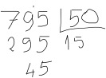
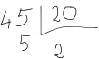

O jogo das notas
1 O Jogo das notas
Este é um jogo simples, que tem como objetivo identificar o menor número de notas que permitem atingir um determinado montante em euros.
As quantias variam entre 100 € e 1000 €, sendo sempre múltiplas de 5, de forma a ser possível pagar este montante só com notas. As notas existentes no jogo são:
· notas de 50
· notas de 20
· notas de 10
· notas de 5
Assim, o jogador deverá pensar numa solução que se inicie com o maior número de notas de maior valor, seguindo-se notas de valor decrescente, até completar o valor restante. Observe o seguinte exemplo:
795 € = 50 € ´ 15 + 20 € ´ 2 + 5€ ´ 1
O que dá um total de 18 notas.
Como calcular o número de notas máximo de cada quantia? Com a divisão inteira...

Com 15 notas de 50 € conseguimos a quantia de 750 €, faltando 45 € para o total. Repete-se o mesmo processo com notas de 20 €...

Precisamos de mais 2 notas de 20 €, mas ainda faltam 5€.
Sendo o resto 5 €, não é possível utilizar notas de 10, pelo que bastará mais uma nota de 5 €.
Ou seja: 15 notas de 50 € + 2 notas de 20 € + 1 nota de 5 €.
|
|
Experimente este raciocínio para outros montantes: 100 €, 240 €, 280 €, 335 € |
Vamos então começar por delinear o nosso algoritmo...
O algoritmo será o seguinte:
1. Definir o valor aleatório do montante a calcular
2. Ler a jogada do jogador: este deverá indicar o menor número de notas que permitem atingir o montante definido aleatoriamente.
3. Calcular o número de notas:
3.1. notas ¬ subproblema calcular notas de 50 €
3.2. notas ¬ notas + subproblema calcular notas de 20 €
3.3. notas ¬ notas + subproblema calcular notas de 10 €
3.4. notas ¬ notas + subproblema calcular notas de 5 €
4. Verificar se o jogador acertou e apresentar resultado.
Observe que temos vários subproblemas para os quais teremos que desenhar o algoritmo com detalhe suficiente. Como vimos antes, o cálculo do número de notas é sempre semelhante - divisão inteira - variando apenas o divisor. Vamos então desenvolver uma função que resolva este problema:
def notas(valor, nota):
n = valor // nota
if n > 0:
print(n, "notas de", nota)
return n
· A função tem dois parâmetros, o valor total a ser pago e o valor da nota;
· determina o quociente da divisão inteira pelo valor da nota. Caso seja superior a zero, apresenta o número de notas;
· no final a função retorna o número de notas.
Vamos então criar a função jogo() que implementa o algoritmo apresentado:
import random
def jogo():
# 1. montante a calcular
montante = 5*random.randint(20, 200)
print("Quantas notas são necessárias para", montante, "€?")
# 2. Ler a jogada do jogador
notas_jogador = int(input())
# 3. calcula o numero de notas
notas_50 = notas(montante, 50)
montante -= 50 * notas_50
notas_20 = notas(montante, 20)
montante -= 20 * notas_20
notas_10 = notas(montante, 10)
montante -= 10 * notas_10
notas_5 = notas(montante, 5)
montante -= 5 * notas_5
# 4. verifica se acertou
if notas_jogador == notas_50 + notas_20 + notas_10 + notas_5:
print("Acertou")
else:
print("Errou, eram", notas_50 + notas_20 + notas_10 + notas_5, "notas.")
A função random.randint() seleciona um número inteiro aleatório entre um número mínimo e um número máximo.
|
|
Observe os argumentos na chamada de random.randint(): 20 e 200. Justifique a utilização destes valores e não de outros.
|
Neste caso optou-se por múltiplos de 5 € entre 100 € e 1000 €, pelo que os limites do conjunto de inteiros possíveis vão de 20 a 200.
A leitura da jogada por parte do jogador humano é realizada através da função input().
No passo 3 do algoritmo, fazem-se quatro chamadas à função notas(), com os 4 tipos de notas disponíveis.
E finalmente, no passo 4 do algoritmo, é feita a comparação da jogada do jogador humano e o valor calculado.
|
|
Jogue este jogo. |
|
|
Observe que ao chamarmos 4 vezes a mesma função notas(), estamos a reutilizar esse código. Que vantagens tem esta reutilização?
|
2 Desafio final
Tente agora adaptar o seu jogo ao cálculo de qualquer montante de 100 a 1000. Neste caso, para além das notas, terá também que utilizar moedas...
|
|
Partilhe o seu jogo!
|